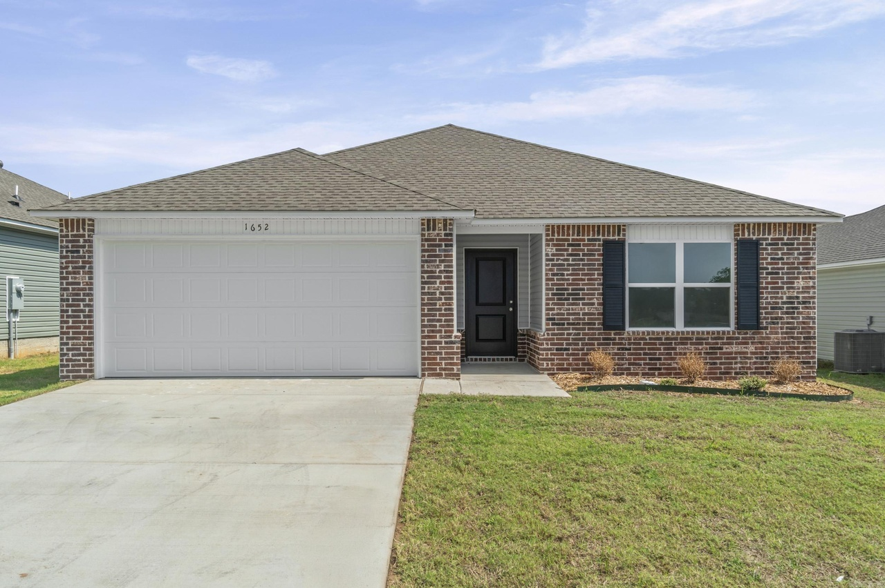
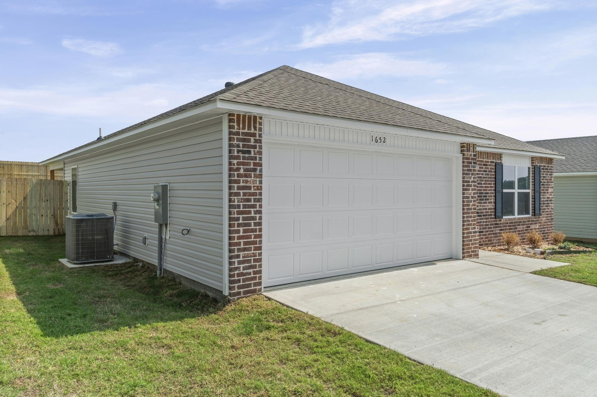
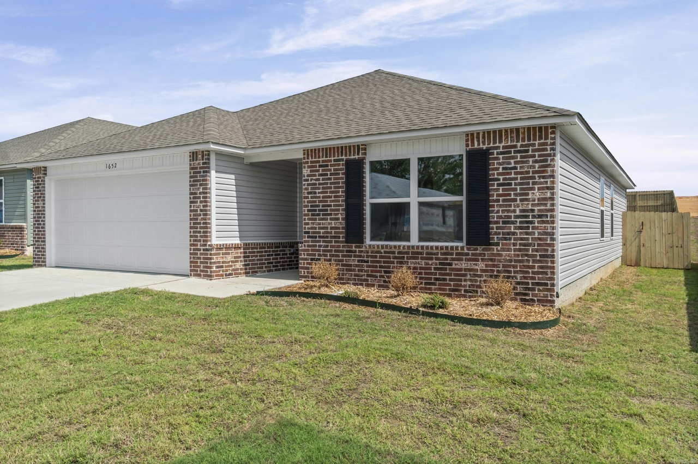
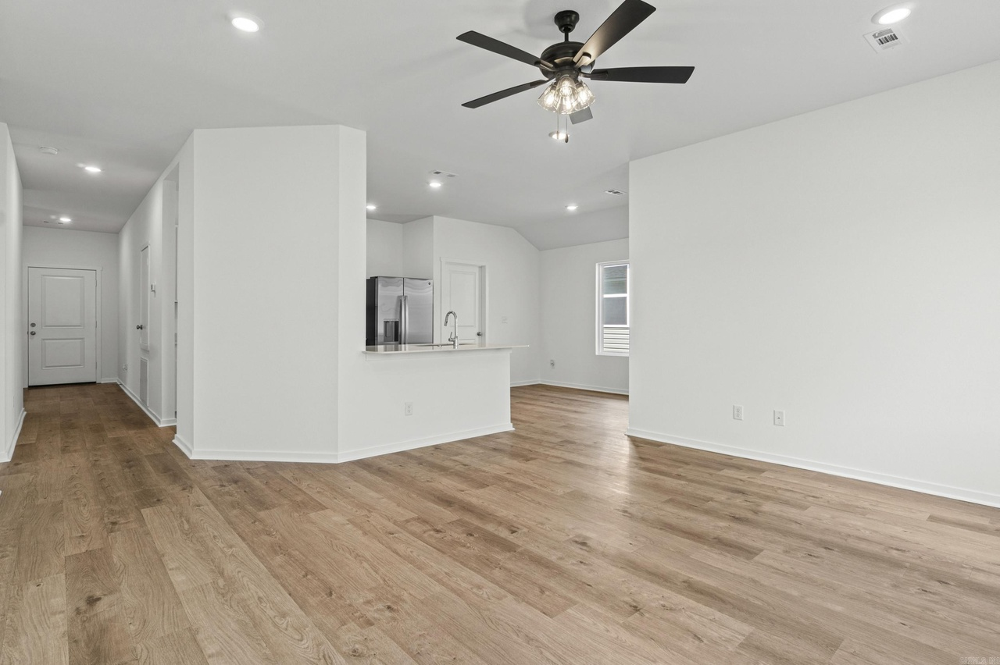
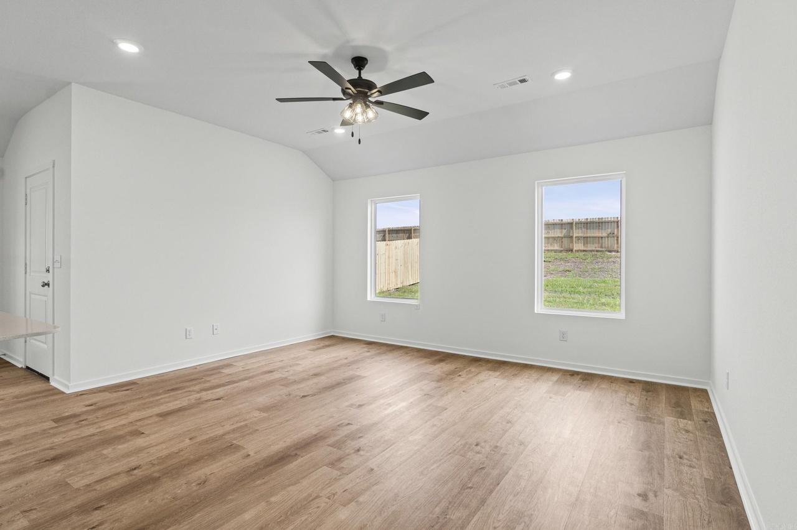
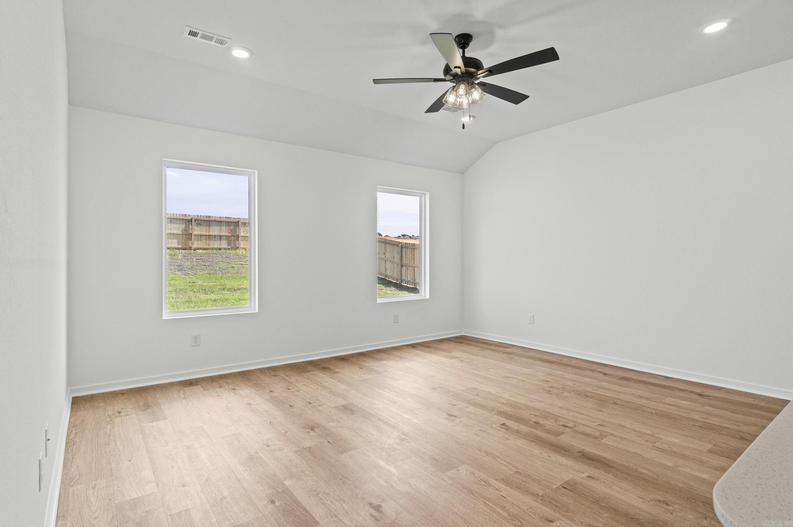
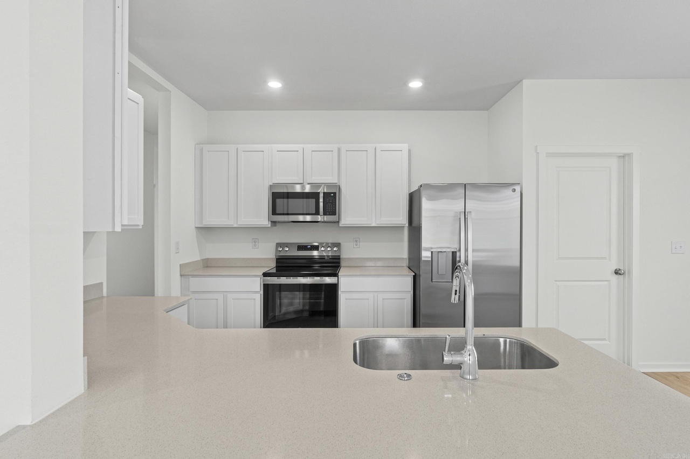
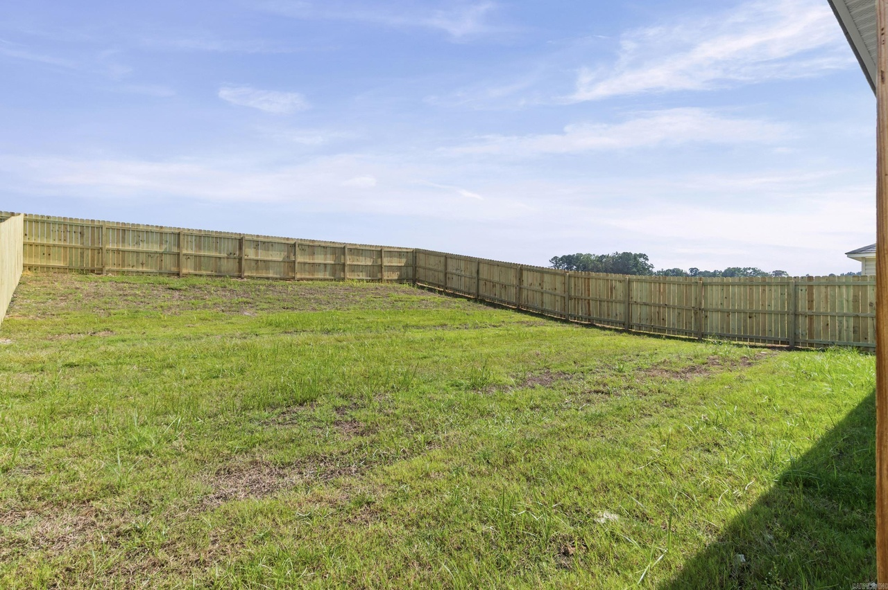
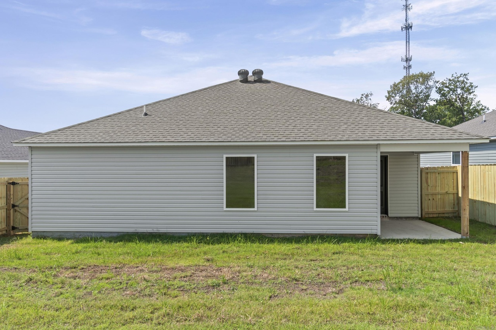
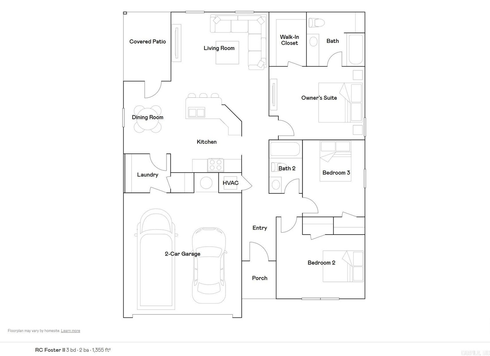

Rc Foster II by Lennar · finished, fenced and move-in ready.
I like the open living plan, particularly because there is a real dining nook rather than an expectation that everyone eats at the kitchen counter. The bedrooms are reasonably sized for a 1,355-square-foot house, and the covered rear patio adds usable outdoor space.
Appliances and a fully fenced backyard are included, two practical rental advantages. But the backyard is not all flat: much of it slopes upward. There is still a substantial flat area to enjoy, so I see the grade as a tradeoff rather than a dealbreaker.
The home is completed and move-in ready, although I am still evaluating it as an investment; it is not a purchased property.
A surprisingly usable layout. The kitchen island, connected living room and separate dining nook allow everyday living and gathering without squeezing rooms into corners. All three bedrooms have practical proportions, and the owner's suite has its own bath.
Covered outdoor space and a fully fenced yard. The covered rear patio is a genuine asset, particularly when a tenant wants to relax outside. The fence makes the outdoor space feel more private and usable.
Move-in ready and equipped. The home is complete, and appliances are present. That removes construction-completion uncertainty and makes it possible to prepare for a tenant soon after closing, subject to final cleaning and any improvements. Confirm the precise appliance inclusions in the purchase agreement.
Familiar builder and community. This is Lennar's Cottage Walk, just down the street from 1649 Rambling Brook Drive. The broader builder, location and rental-market analysis largely carries over, but the lot and layout are different.
A considerable part of the backyard rises uphill. I would prefer a larger level yard: sloped land is harder to use and can require more upkeep. The upside is that there is still enough flat, fenced yard for normal outdoor enjoyment, with a covered patio directly off the living area.
I would examine drainage, the condition of the grading and how easily the sloped section can be mowed before finalizing a purchase.
I am budgeting $2,200 in initial CapEx for blinds and a glass shower door. Neither is a must-have, but I recommend both to make the finished rental more comfortable. This is an optional allowance rather than a necessary builder charge. The CapEx figure above and the modeled returns are linked to the live AR-14 spreadsheet row.
Cottage Walk is a Lennar single-family community in Benton, part of the Little Rock metro area. Residents have access to local schools, retail, parks and major commuting routes. The general market context is the same as for the neighboring property at 1649 Rambling Brook Drive.
School boundaries, assigned schools and ratings can change and must be verified with the school district.
| Community | Cottage Walk · Lennar |
| Plan / homesite | Rc Foster II · 0330 |
| Address | 1652 Rambling Brook Drive, Benton, AR 72015 |
| Home type | Single-story detached · new construction |
| Living area | 1,355 sq ft |
| Bedrooms / bathrooms | 3 bedrooms · 2 bathrooms |
| Garage | Attached two-car garage |
| Outdoor features | Covered entry, covered rear patio, fully fenced yard |
| Yard terrain | Usable flat portion; significant sloped portion |
| Interior layout | Open living and kitchen; separate dining nook |
| Appliances | Included (confirm inclusions in builder contract) |
| Property status | Move-in ready · proposed investment |









Actual-home photography and floor plan are hosted with this property page. Images sourced from the property's listing.
This move-in-ready home is under consideration as an investment; it has not been purchased. The financial figures are modeled assumptions from the AR-14 row in the portfolio spreadsheet, not actual operating results or guaranteed returns. Builder features, terms, price, availability and lot conditions should be confirmed before an offer.